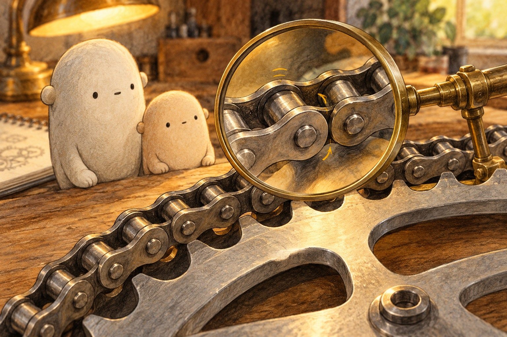
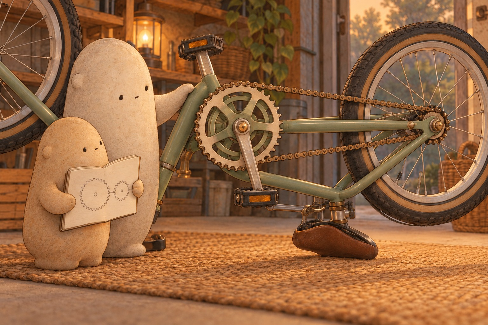
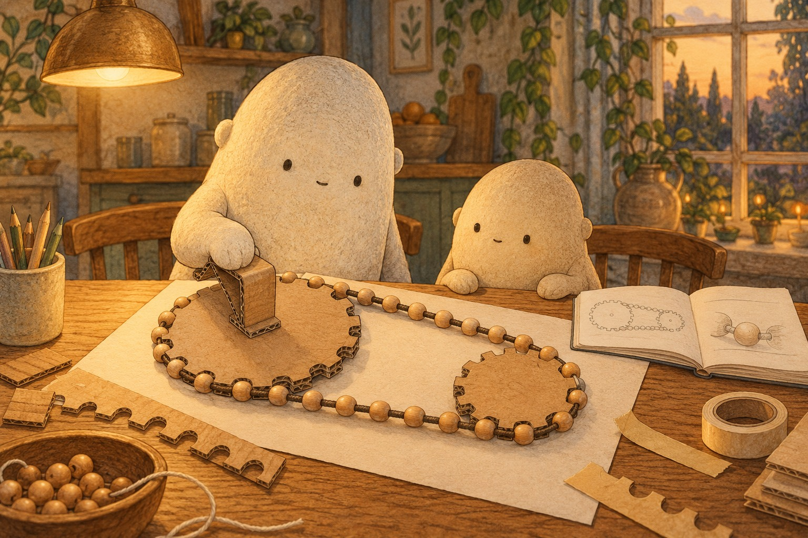
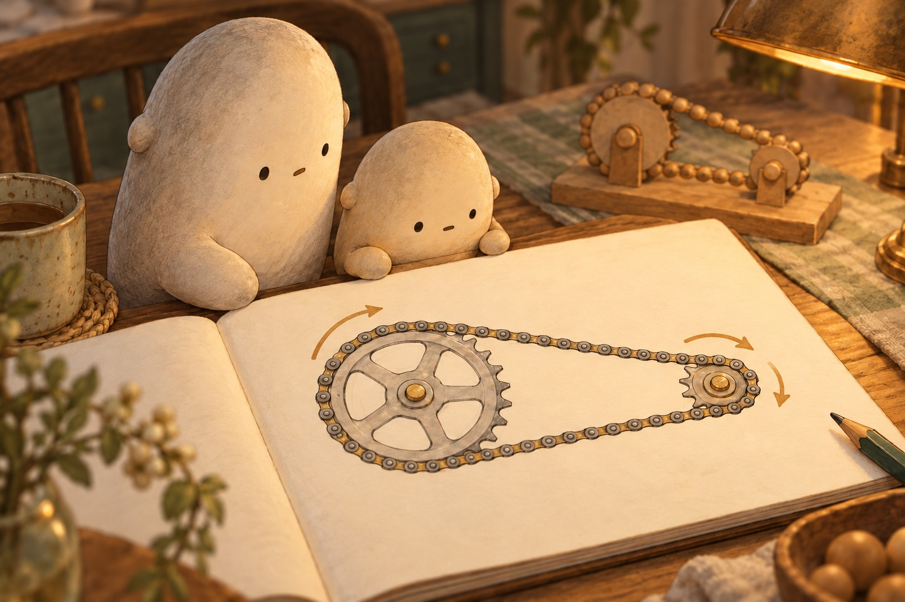
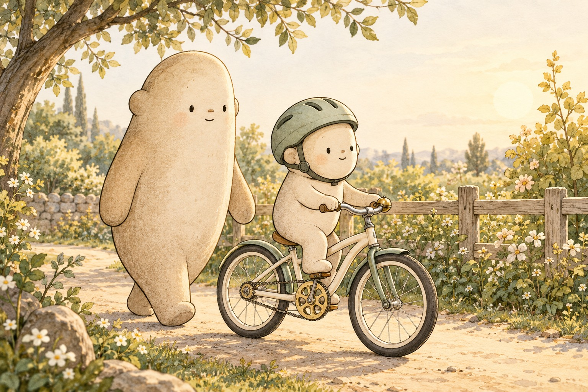

Follow one pedal push
A push has a path
Little Wonderer studied the bike resting on its mat. The pedals sat far from the back wheel. “How does one push reach all that way?” A chain joined them. It was a loop of small metal pieces called links. Big pointed along the loop, from the front sprocket to the back.
What connects the pedals to the back wheel?

Bend at each pin
Each link joined the next with a tiny pin. The links could turn at these joints, so the chain bent around a wheel without stretching like rubber. That toothed wheel was a sprocket. Its teeth fitted between the chain’s rollers. The hooked-together shapes kept the chain from slipping as it pulled.
Why do joints help a chain fit around a sprocket?

Teeth to count
With the bike completely still, Little counted teeth. The big front sprocket, called the chainring, turned with the pedals. Its teeth pulled the top of the chain toward the front. The moving chain pulled the back sprocket’s teeth. While pedaling forward, that sprocket drove the back wheel. Turning became pulling, then turning again.
Which part pulls the top of the chain?

A loop on the table
At the table, Big turned a cardboard wheel by its middle. A loop of beads sat in notches around its edge. As the big wheel turned, it pulled the bead loop. The loop turned a smaller wheel. Little followed one bead around. Each part passed the motion to the next.
How does the bead loop pass motion between wheels?

One turn becomes two
The notebook showed 32 teeth in front and 16 at the back. One pedal turn moved the chain past 32 teeth: enough for two back-wheel turns. A big front and small back suit faster riding. A small front and big back make pedaling easier uphill. These choices are called gears.
Which gear choice would make an uphill pedal push easier?

A push goes with you
Little’s helmet was snug for a gentle ride beside Big. The chain carried each pedal pull to the back wheel. A drill bit’s spiral carries chips; a bike chain carries a pull. Turning shapes could do different jobs. “Where else could a loop carry motion?” Little wondered.
Where else might a loop carry a pull?
For a complete still story, download the foldable book.
How a Bike Chain Works
How does one push of the pedal reach all the way to the back wheel?
Where shall we look?
How can metal bend around a wheel?
Find the little round pins between links.
A little explanation & something to try
A chain is a loop of links joined by tiny pins. Each joint lets neighboring links turn. The links stay the same length while the whole loop bends around a sprocket.
Try this. Draw three links joined by dots for pins. Bend your drawn path around a circle.
How does the pedal reach the back wheel?
Follow the top of the chain between the two sprockets.
A little explanation & something to try
A sprocket is a toothed wheel. The front one, called the chainring, turns with the pedals. Its teeth pull the chain; the chain pulls the back sprocket’s teeth. That sprocket turns the back wheel as you pedal forward.
Try this. Use the diorama to follow turning, pulling, then turning again.
What can a still bike show us?
Look for the chain’s links and the sprockets’ teeth.
A little explanation & something to try
Teeth fit into the spaces between the chain’s rollers. This fit lets the sprocket pull the chain without slipping. Count the front and back teeth while everything is still.
Try this. Count teeth first, then watch one slow pedal turn. Keep Big beside you. Count only while the bike is still. Big holds an upside-down bike steady on a mat; turn only the pedal slowly by hand, with fingers well away from chain, sprockets, and spokes whenever anything moves. Leave oiling and repairs to Big. At the table, try notched cardboard wheels and a bead loop, or tape paper strips into a chain. Use child scissors only with Big’s yes.
Can one pedal turn make two wheel turns?
Compare the big front sprocket with the small back one.
A little explanation & something to try
With 32 teeth in front and 16 behind, one pedal turn gives two back-wheel turns. A big front and small back help with faster riding. A small front and big back make pedaling easier uphill. These choices are gears.
Try this. Draw one circle for a pedal turn and two circles for the back wheel’s turns.
Small stories around a bike
Find the two amounts in each story, then add or subtract.
Draw the amounts in one story to show how you found the answer.
1. Little joins 28 paper links, then adds 17 more. How many links are in the paper chain?
28 + 17 =
A small hint
Combine the links from both groups.
2. Big has 64 beads and threads 26 onto a model chain. How many beads are left?
64 − 26 =
A small hint
Take away the beads already threaded.
3. Little records 23 slow pedal turns, then 19 more. How many pedal turns are recorded?
23 + 19 =
A small hint
Join the two counts of pedal turns.
4. A paper gear has 52 drawn teeth. Little colors 18. How many teeth still need color?
52 − 18 =
A small hint
Subtract the teeth that are colored.
5. A bike has 32 teeth on its front sprocket and 16 on its back sprocket. How many teeth is that in all?
32 + 16 =
A small hint
Add the teeth on the two sprockets.
6. Little plans 15 gentle driveway laps and finishes 7. How many laps are left?
15 − 7 =
A small hint
Take the finished laps away from the plan.
Give the chain a clear command
Choose a still view and tell what to count or draw.
Trace …name the loop you will follow
Count …name the teeth on a still sprocket
Draw …show how a loop joins two wheels
Draw two sprockets joined by a chain. Add an arrow along the top of the chain.
SAY IT FIRST. THEN DRAW OR WRITE.
A temporary space. Copy your words before closing or reloading; they are not saved or sent.
chainlinkpinsprocketteethpedalgearpullturnwheel
Does your command begin with an action word, such as Trace, Count, or Draw?
Follow the pedal’s pull
One loop connects a big front sprocket to a small back sprocket.
Pedal turns 0
Back-wheel turns 0
Which makes more turns: the back wheel, or the pedals? Choose a guess if you like.
Follow one pedal push
- Find the pedal and the front sprocket with 32 teeth.
- Trace the upper chain toward the front sprocket. Its teeth pull the links.
- The chain pulls the 16-tooth back sprocket. It turns with the back wheel while pedaling.
- Count the turns: one at the pedals, two at the back wheel. What connects the two?
Quiz
Answer key
- Quiz 1
- Tiny pins join the links and let neighboring links turn at their joints.
- Quiz 2
- The front sprocket’s teeth pull the chain. The chain then pulls the back sprocket’s teeth.
- Quiz 3
- The back wheel turns twice: 32 front teeth move the chain past two groups of 16 back teeth.
- Quiz 4
- A small front sprocket and a big back sprocket make pedaling easier uphill, with fewer wheel turns per pedal turn.
A little book of pedal pushes
US Letter · one-sided · portrait · 100% / actual size. Turn off fit-to-page and browser headers and footers.
- Print the PDF and follow the fold guide on its page 8 panel.
- An adult makes the single center cut shown by the solid line.
- Fold into a little book. The cover, six scenes, and fold guide make eight pages.